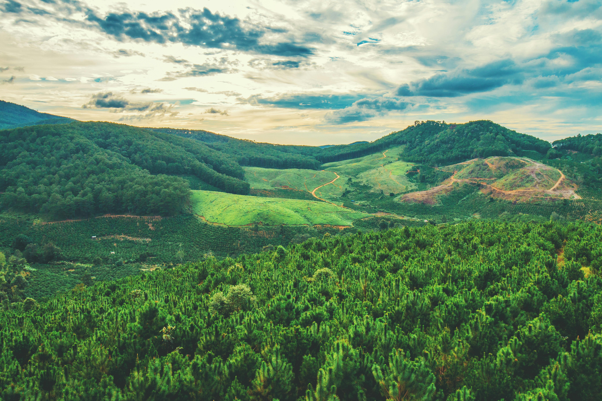

About aSantE Cycle
We started as a small eco initiative and grew into a movement of conscious consumers, partners, and communities across Southeast Asia.
Who we are
aSantE Cycle designs and curates eco-friendly essentials that help you reduce waste and live more mindfully. We believe sustainability should feel practical, transparent, and aligned with everyday life—not an extra burden.
Our team works directly with suppliers who share our standards for ethical sourcing, fair conditions, and lower environmental impact. Every product line is reviewed for packaging, logistics, and end-of-life impact.
Transparency
We publish clear information on sourcing, certifications, and the footprint of our operations.
Partnerships
Long-term relationships with farmers, NGOs, and local groups keep impact grounded in real places.
Plastic-free first
We prioritize recycled and compostable packaging and continuously phase out unnecessary plastic.

From Indonesia to your door
Reforestation, coastal clean-ups, and fair trade networks are at the heart of how we give back.
We invest a portion of revenue in tree planting and community programs, and we report on outcomes annually so you can see the difference your choices make.
Stay in the loop
Get updates on new products, partnerships, and stories from the field.
Subscribe on the home page